"Viaduct hydrants" in Hong Kong
[Sources for this page]Sources for this page
- Google | Google Maps (Street View) | https://www.google.com/maps/
- Highways Department (HKSAR Government), on Y2024-M09-D30 | Highways Department Technical Circular No.2/2024 | https://www.hyd.gov.hk/en/technical_references/technical_document/hyd_technical_circulars/doc/2024/02/TC0224.pdf
- Lands Department (HKSAR Government) | GeoInfo Map | https://www.map.gov.hk/gm/map/ | I learnt about this source from snowshine12345 https://www.discuss.com.hk/viewthread.php?tid=29167296&page=1#pid520626555
- on.cc, on Y2018-M08-D08 | 清風街天橋爆消防喉 消防龍頭飛落橋底 | https://hk.on.cc/hk/bkn/cnt/news/20180808/bkn-20180808061520854-0808_00822_001.html
- Ronald Kwong | Fire Engineering Code of Practice for Minimum Fire Service - Installations and Equipment | The Hong Kong Institute of Facility Management website | https://hkifm.org.hk/public_html/2013_doc/Fire Services Installation CPD(R2).pdf
- Sam C. M. Hui, in Y2020-M12 | Training Course on Building Services Engineering - 2. Fire Services Part 2 - 2.1 Fire services systems | ibse.hk | http://ibse.hk/bse/Training_Course_BSE_2_FSS-2_1.pdf
- tngan, on Y2024-M06-D16 | Fire hydrant on North bound platform | Gwulo website | https://gwulo.com/media/49113
I don't know the official name of this type of hydrant, but to make explanation easier I will collectively call them "viaduct hydrants". This is becaues this type is usually found on road viaducts, flyovers, and elevated structures in general. So far I have only managed to find mentions of this type in a Highways Department Technical Circular, which stipulated the installation of fire hydrants on long viaducts if hydrants on street-level cannot be used to fight fires on the viaduct. The technical circular only included graphics for one of the variants, but there are as much as four variants. Note that the names I will use to refer to all four variants are not official and are only meant to make explanation easier. I will only mention the examples I know of that are notable for each variant.
Something else to note is that most of these "viaduct hydrants" have a unique type of outlet nozzle cap that is not seen on normal hydrants such as the Round Head or Swan Neck, I will simply call these "viaduct hydrant caps". However, it seems these hydrants (at least the two nozzles variants) can have Type II caps as well. More information on hydrant cap types in this page.
"Viaduct hydrant" - "single nozzle" variant
So far, I have only managed to find these on the Tsing Tsuen Road bridge. Their nozzles tilt slightly upwards, similar to how indoor fire hydrants have tilted nozzles. Speaking of indoor fire hydrants, I managed to find a single nozzle variant in Hong Kong Park that has an instantaneous outlet attachment (usually seen in indoor hydrants) rather than the common viaduct hydrant caps. It is installed on an elevated structure outdoors and it even shows up in GeoInfo Map (explained in this page). I will also provide photo of an indoor fire hydrant for comparison.
 |
| An unnumbered "single nozzle variant viaduct hydrant" |
| Tsing Tsuen Road bridge |
| Photo taken in Y2026-M06 |
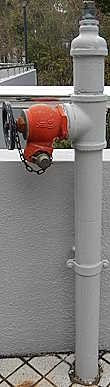 |
| An unnumbered "single nozzle variant viaduct hydrant" that appears in GeoInfo Map (explained in this page), with indoor hydrant instantaneous outlet attachment rather than viaduct hydrant cap |
| outside Hong Kong Park Conservatory |
| Photo taken in Y2026-M03 |
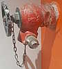 |
| An indoor fire hydrant with the standard instantaneous outlet attachment |
| Tsuen Wan Public Library |
| Photo taken in Y2026-M03 |
"Viaduct hydrant" - "two nozzles, goggles-like" variant
You can find ones with two viaduct hydrant caps, two Type II caps, and even both types of caps. For example, there are examples of all three of these cap combinations on Ap Lei Chau Bridge. The ones on Ap Lei Chau Bridge even have all the hydrant markings you would expect to see on ordinary hydrants such as a Round Head or Swan Neck. And I am not just talking about the typical hydrant number and arrow, but also the H and D dimension labels that I am yet to understand the meaning of. More information on hydrant painting and markings in this page. There is also one at Mong Kok East Station Bus Terminus with two more valves (three in total), one of the extra valves even has a handwheel attached.
 |
| red "two nozzles goggles-like variant viaduct hydrant" 31375 (previously 1546) with viaduct hydrant caps |
| Ap Lei Chau Bridge |
| Photo taken in Y2026-M03 |
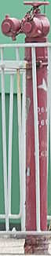 |
| red "two nozzles goggles-like variant viaduct hydrant" (previously numbered 1551) with Type II caps |
| Ap Lei Chau Bridge |
| Photo taken in Y2026-M03 |
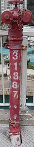 |
| red "two nozzles goggles-like variant viaduct hydrant" 31387 (previously 1545) with one viaduct hydrant cap and a Type II cap |
| Ap Lei Chau Bridge |
| Photo taken in Y2026-M03 |
| ||
| front and back photos of red "two nozzles goggles-like variant viaduct hydrant" 28036 with viaduct hydrant caps, with two additional valves (one of which has handwheel) | ||
| Mong Kok East Station Bus Terminus | ||
| Photos taken in Y2026-M06 |

"Viaduct hydrant" - "two nozzles, V-shaped" variant
So far I have been able to find ones with two viaduct hydrant caps or two Type II caps.
 |
| An unnumbered red "two nozzles V-shaped variant viaduct hydrant" with viaduct hydrant caps |
| Tsing Tsuen Road bridge |
| Photo taken in Y2026-M06 |
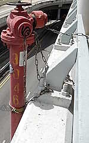 |
| red "two nozzles V-shaped variant viaduct hydrant" 3046 with Type II caps |
| Mong Kok East Station Bus Terminus |
| Photo taken in Y2026-M06 |
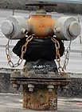 |
| orange (?) "two nozzles V-shaped variant viaduct hydrant" 13669 with primer grey (?) Type II caps |
| towards the northeastern end of Kai Tak Bridge Road northeast-bound lanes |
| Photo taken in Y2026-M08 |
There are some special ones on the Heung Yuen Wai Highway and Shun Long Road / Tuen Mun Chek Lap Kok Tunnel Road viaducts, which are connected with water pipes that are do not have constant diameter. The water pipes gets slightly narrower towards the hydrant, which looks like the hydrant is installed on a "truncated cone". The ones along Heung Yuen Wai Highway have hydrant numbers with the formate "SN 1####".
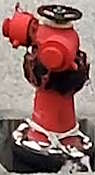 |
| An unnumbered red "two nozzles V-shaped variant viaduct hydrant" (not shown in GeoInfo Map) with Type II caps, "truncated cone" installation |
| Shun Long Road between North Lantau Highway and Tuen Mun Chek Lap Kok Tunnel Road |
| Photo taken in Y2026-M08 |
I don't really have much else to say about this type so I guess I will mention a funny incident that happened during the early morning on Y2018-M08-D08: the water pipe connecting to one of these hydrants on the Tsing Fung Street flyover bursted and the entire hydrant fell down onto the "government land" below (news articles say it is a storage site of the Leisure and Cultural Services Department). This poor hydrant had Type II caps, both of which detached after impacting the ground. Right now it is still a "two nozzles V-shaped variant viaduct hydrant" with Type II caps at the same location but I don't know if the one that fell off the bridge got put back up or if it was a new one.
"Viaduct hydrant" - "two nozzles, V-shaped" tilted nozzle variant
There are three "two-nozzles V-shaped viaduct hydrant" with their nozzles tilted slightly upwards on the Kai Tak Bridge Road. The pipes conencted to the hydrant look larger in diameter when compared to other "viaduct hydrants", as if a full size hydrant (such as Round Head) was meant to be installed. There are also some waterworks related objects (possibly some sort of valve?) on the bridge with valve nuts visible, but it is not clear if they are related to these hydrants. It is also interesting how the green paint of this object looks similar to the green paint on Round Heads at Hong Kong Disneyland and the retired "Octagonal hydrant" 360 in North Point Fire Station.
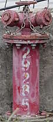 |
| red "two tilted nozzles V-shaped variant viaduct hydrant" 29235 (previously 2447) |
| middle of Kai Tak Bridge Road southwest-bound lanes |
| Photo taken in Y2026-M08 |
 |
| red "two tilted nozzles V-shaped variant viaduct hydrant" 29236 (previously 2448) |
| southwest tip of Kai Tak Bridge Road southwest-bound lanes |
| Photo taken in Y2026-M08 |
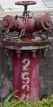 |
| red "two tilted nozzles V-shaped variant viaduct hydrant" 29237 (previously 2442) |
| Photo taken in Y2026-M08 |
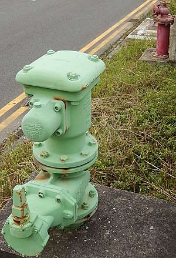 |
| A green, presumably waterworks-related object not far from red "two tilted nozzles V-shaped variant viaduct hydrant" 29235 (previously 2447) |
| middle of Kai Tak Bridge Road southwest-bound lanes |
| Photo taken in Y2026-M08 |
"Viaduct hydrant" - "two nozzles on opposite sides" variant
I have only found ten examples of this variant on the East Kowloon Corridor viaduct. They all have a modified type of viaduct hydrant cap with four handles intead of two, but with two exceptions. For some reason, two of these hydrants have a Type II cap on one side and the four-handle viaduct hydrant cap on the other. I don't think there are any good vantage point for photographing these hydrants so you have to ride a minibus, bus, taxi, or drive.
 |
| red "two nozzles on opposite sides variant viaduct hydrant" with viaduct hydrant caps that have four handles |
| East Kowloon Corridor viaduct |
| Photo taken in Y2026-M06 |
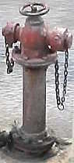 |
| red "two nozzles on opposite sides variant viaduct hydrant", one of the nozzles has a Type II cap |
| East Kowloon Corridor viaduct |
| Photo taken in Y2026-M06 |
There used to be an interesting example of this variant, which replaced Double Head Swan Neck 274, near the point where the Canal Road Flyover northbound lanes split west and becomes Gloucester Road. It had hydrant caps that were nut-operated, with no handles, which was hard to find even in Google Maps street view as I believe 2009 (the time when the earliest Google Maps street view captures were made in Hong Kong) was during the period when nut caps were being phased out and replaced by caps with handles. It looked really cool, I highly recommend checking it out in Google Maps street view. However, it was removed at some point between the 2011 and 2017, so you have to check earlier street view captures.